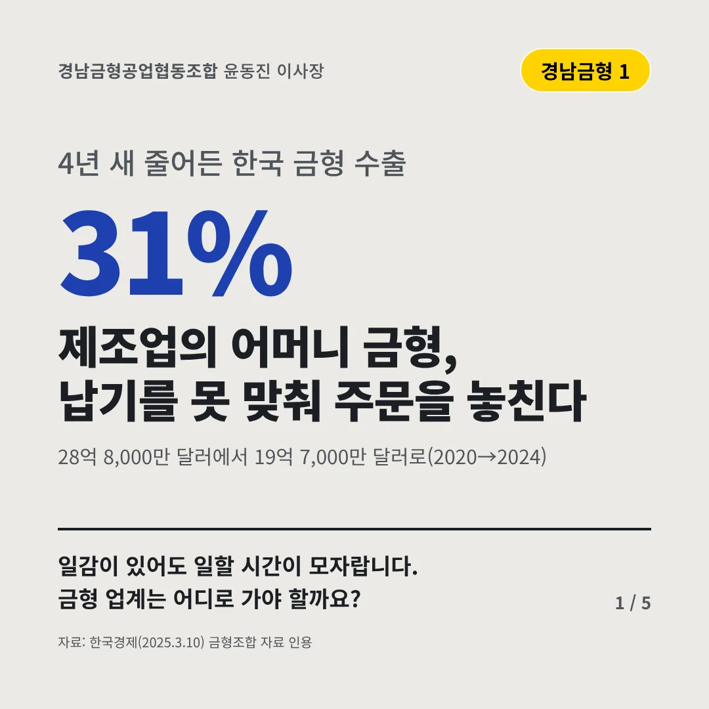
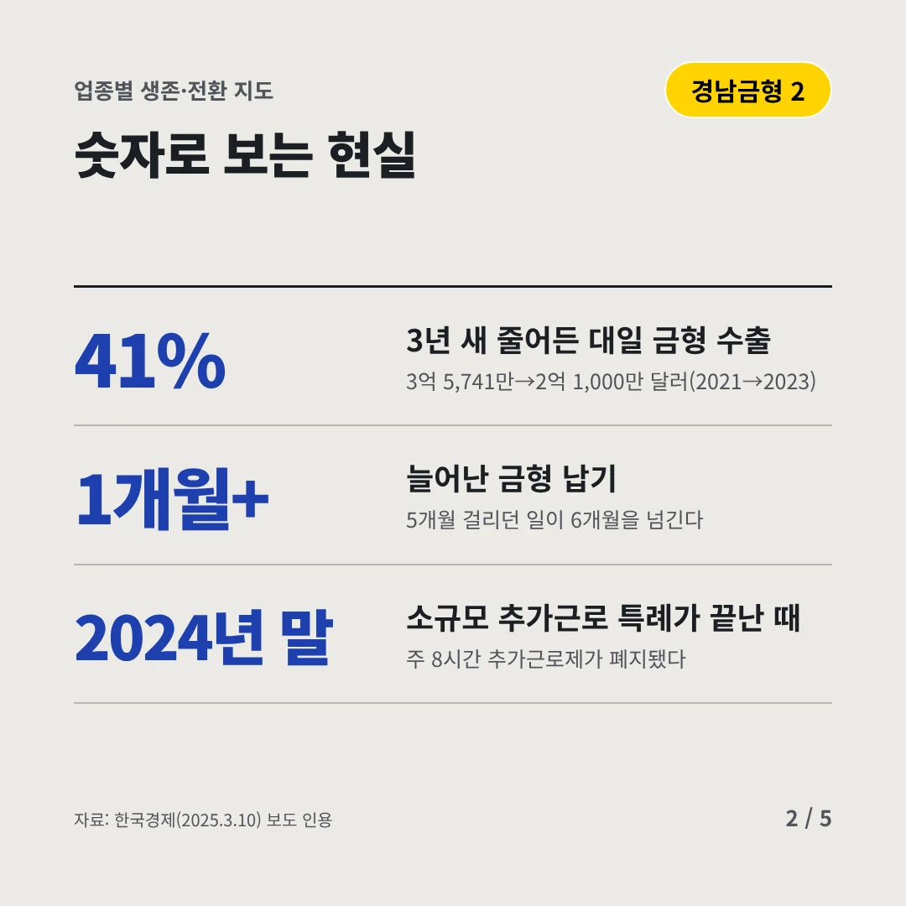
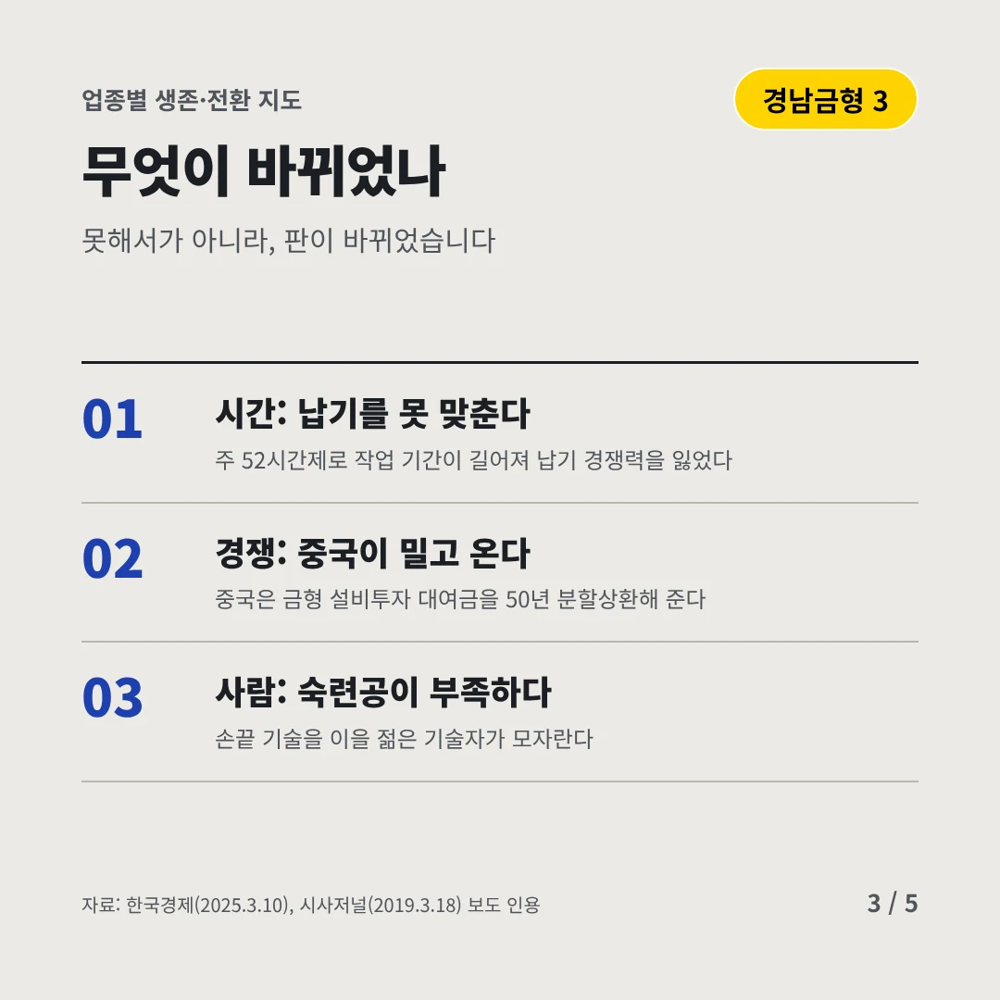
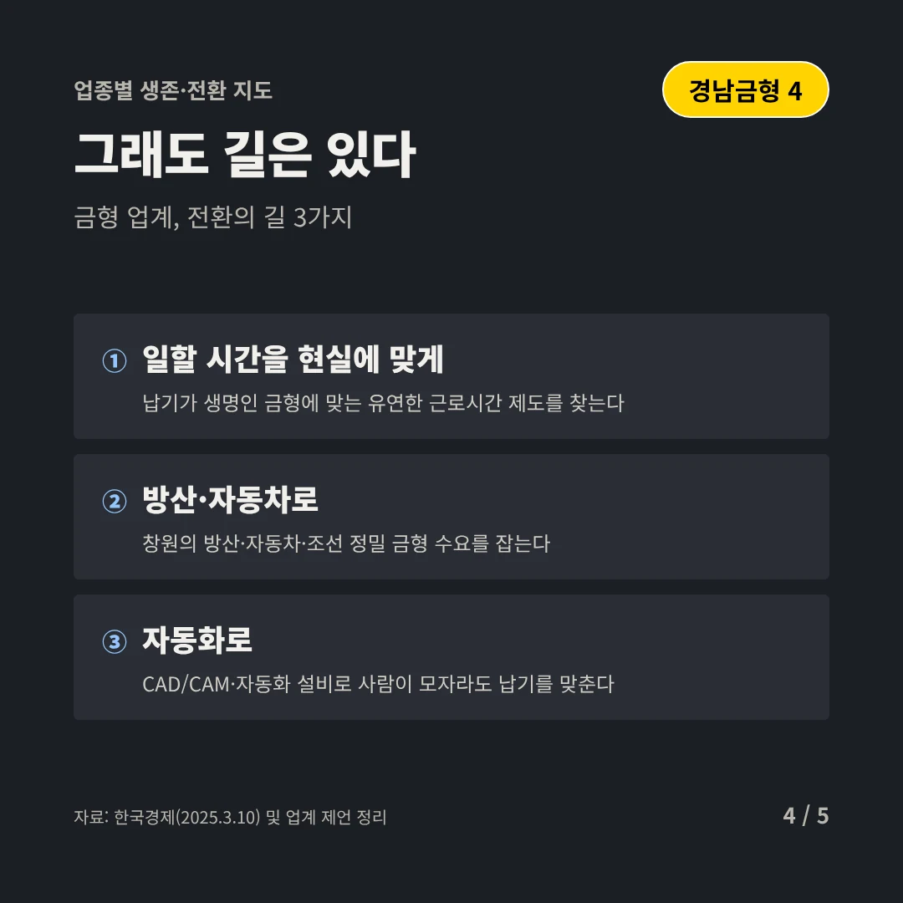
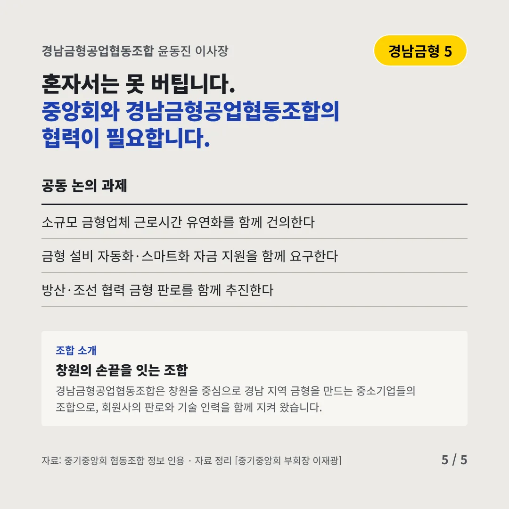
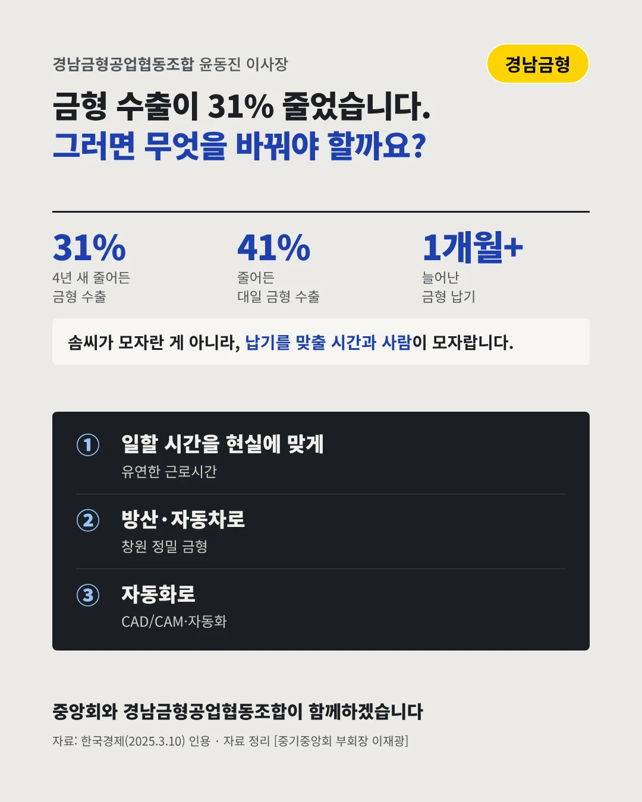

경남금형공업협동조합
제조업의 어머니 금형, 납기를 못 맞춰 주문을 놓친다
31% 4년 새 줄어든 한국 금형 수출






일감이 있어도 일할 시간이 모자랍니다. 금형 업계는 어디로 가야 할까요?
숫자로 보는 현실
- 41%3년 새 줄어든 대일 금형 수출3억 5,741만→2억 1,000만 달러(2021→2023)
- 1개월+늘어난 금형 납기5개월 걸리던 일이 6개월을 넘긴다
- 2024년 말소규모 추가근로 특례가 끝난 때주 8시간 추가근로제가 폐지됐다
무엇이 바뀌었나
- 시간: 납기를 못 맞춘다주 52시간제로 작업 기간이 길어져 납기 경쟁력을 잃었다
- 경쟁: 중국이 밀고 온다중국은 금형 설비투자 대여금을 50년 분할상환해 준다
- 사람: 숙련공이 부족하다손끝 기술을 이을 젊은 기술자가 모자란다
그래도 길은 있다
- 일할 시간을 현실에 맞게납기가 생명인 금형에 맞는 유연한 근로시간 제도를 찾는다
- 방산·자동차로창원의 방산·자동차·조선 정밀 금형 수요를 잡는다
- 자동화로CAD/CAM·자동화 설비로 사람이 모자라도 납기를 맞춘다
한 장 요약

조합 소개
경남금형공업협동조합은 창원을 중심으로 경남 지역 금형을 만드는 중소기업들의 조합으로, 회원사의 판로와 기술 인력을 함께 지켜 왔습니다.
자료: 한국경제(2025.3.10), 시사저널(2019.3.18)